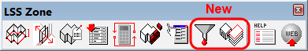
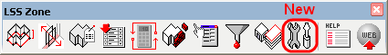
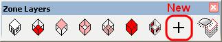
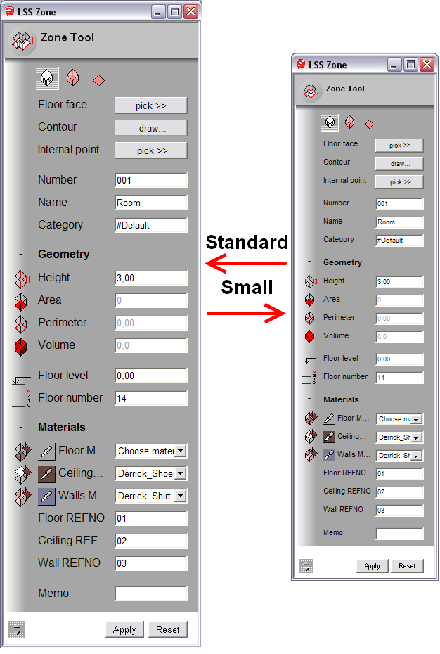

- 'Layers Toolbar' added
- 'Filter Zones' dialog added
- handling of three zone types added (room, box, flat)
- 'List Template' dialog updates results after 'Query string' changes as expected
- report generator display properly grouped string values in a zones' list now
- proper handling of a zero height of a zone implemented
- picking a floor face in a model with multiple identical component instances works well now
- floor, ceiling and walls cumulative area added to 'Properties' dialog
- supressing units in an active model now affects zone labels, list and properties representation
- hang after applying new properties to a set of transformed zones removed
- an error fixed in 'Attach Labels' dialog if a label has a length value measured in feet and inches
(appeared in a model with feet and inches)


- automatic zone's contour tracing feature added
- 'Settings' dialog added (it contains settings only for automatic tracing for now)
- ability to list nested elements of zone group(s) added to zone's list generator
- supressing of area units now affects 'LSS Zone' tool dialog as well
- 'List Template' dialog restores caret position properly after refreshing of query results
-
'Floors count' property removed from 'LSS Zone' dialog, when 'room' zone type is active at an initial launch of a dialog
(it is visible now only for 'box' zone type as intended)
- SU crash after deleting a nodal point while 'LSS Zone' tool is active is fixed
- custom attributes remain attached after zone's contour editing using 'LSS Zone' tool

This update was basically focused on user interface improvements and what is even more important
this version is made compatible with SketchUp 2014.
- ability to switch all dialogs to a smaller font size added
- layout of all web-dialogs is tableless now
- it is possible to fold/unfold groups of settings inside dialogs
- automatic adjustment of dialog's height added
-
'Trace Contour' settings added to 'Properties' dialog (it is possible to set contour tracing options individually
for selected zone using 'Properties' dialog, options inside 'Settings' dialog affect new zone only)
- adjustment of an initial position of zone's label added
-
persistence of zone's label position added (it is possible to move label manually after attaching and label will stay
at the same position after rebuilding of a zone)
-
eye-droppers of 'LSS Zone' main tool dialog now pick visible material of a face (tool checks
if front surface or back surface of a face is under cursor and returns
face.material or face.back_material depended on check result)
- 'LSS Zone' extension is made compatible with SketchUp 2014
- pressing of an 'eye-dropper' button of 'Zone Tool' dialog now unpresses other 'eye-dropper' buttons in case if they were pressed
- label template now processes well all characters
- contour tracing now traces contours made of instances of the same component definition/group
-
deleting of an attribute dictionary in 'Properties' dialog now handles the situation when there are not only zone
objects in current selection set